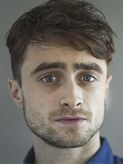
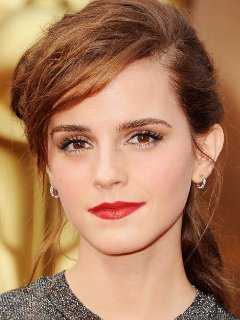

Дэниэл Редклифф
 Дэниэл Редклифф - театральный и киноактер английского происхождения, бессменный исполнитель роли Гарри Поттера. В 5 лет он получил первую свою роль, сыграв обезьянку в школьном спектакле, а в 1999 году смог продемонстрировать свои таланты на широком экране.
Эмма Уотсон
 Британская актриса, фотомодель. Известна по роли Гермионы Грейнджер, в семи полнометражных кинолентах о юнном волшебнике Гарри Потерре.Эмма Уотсон родилась в апреле 1990 года в столице Франции в семье английский адвокатов Жаклин Луэсби и Криса Уотсона
Эмма Уотсон
Британская актриса, фотомодель. Известна по роли Гермионы Грейнджер, в семи полнометражных кинолентах о юнном волшебнике Гарри Потерре.Эмма Уотсон родилась в апреле 1990 года в столице Франции в семье английский адвокатов Жаклин Луэсби и Криса Уотсона